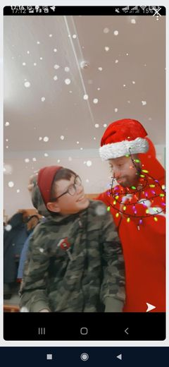

Меня зовут Беляев Максим Олегович, мне 12 лет, живу в г.Хмельницкий. День рождения - 15 июня. Дата рождения - 15.07.2008.Учусь в школе №26 в 7 класе. Увлекаюсь спортом: Баскетбол, Катания на БМХ. Люблю играть на гитаре. Игры на гитаре научился сам. У меня есть старший брат - Саша, ему 19 лет. Мама - Ира, Папа - Олег. На летние каникулы люблю ездить в село к бабушке, село - "Бокиевка". Люблю играть в игры: Самп, Майнкрафт, Стенд офф, Бравл Старс. Очень люблю встречать "Новый Год." Учусь не очень но раньше был отличником с 1 по 4 клас. Есть домашний питомец - Собака, Зовут - Боба, Бакс. Не кусается, очень добрый, любит детей и людей, хороший защитник, когда видит незнакомого человека который ко мне идет - гавкает и гарчит!!


